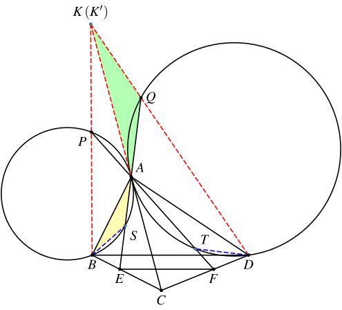
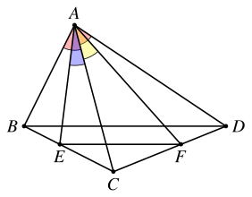
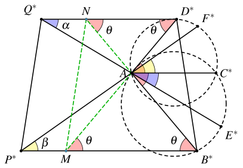

1. 题目
如图，在凸四边形 ABCD 中，AC 平分 ∠BAD，点 E、F 分别在边 BC、CD 上，满足 EF∥BD。分别延长 FA、EA 至点 P、Q，使得过点 A、B、P 的圆 ω1 及过点 A、D、Q 的圆 ω2 均与直线 AC 相切。证明：B、P、Q、D 四点共圆。

2. 分析
这个题的切入点是比较明显的。从结论的 B、P、Q、D 四点共圆可以看出，直线 BP、DQ 和 AC 交于一点，只需要证明这个结论即可。由于直接证明三线共点看上去比较困难，我们可以考虑使用同一法，证明 BP、DQ 分别和 AC 的交点重合。
另一个容易想到的思路是反演。因为题目给了两个圆在点 A 处相切，以及它们的公切线 AC。考虑对点 A 进行反演，这样两个圆的反演像都是和 AC 平行的直线。这样图像基本就转换成了直线型的图像，证明四点共圆变成证明反演之后的 B∗P∗Q∗D∗ 是等腰梯形。
这里面看上去不知道要如何处理的是平行的条件。不过当我们沿着前面的思路往下走的时候就会发现，最终要证明的结论都会转换的 AB、AD 边和 A 点处的角之间的关系。因此我们可以将平行转换成比例关系的条件再用。
3. 第一种思路
3.1. 步骤1：构造交点
设直线 BP、DQ 分别和直线 AC 交于点 K、K′ 只需证明 K 和 K′ 重合，之后由
KP⋅KB=KA2=KQ⋅KD
可得出B、P、Q、D 四点共圆。
3.2. 步骤2：找相似
接下来关键的步骤是找到相似三角形：
设 AE 和圆 ω1 的第二个交点为 S，AF 和圆 ω2 的第二个交点为 T，证明： △K′QA∼△ASB，△KPA∼△ATD。

这个只需要倒角即可证明。
由相切和角平分线的条件可知
∠APB=∠CAB=∠CAD=∠AQD,
因此
∠ASB=180∘−∠APB=180∘−∠AQD=∠AQK′.
而
∠ABS=∠CAS=∠K′AQ,
因此 △K′QA∼△ASB。
同理可证，△KPA∼△ATD。
根据这两个相似三角形，我们可以求出 K′A=SBQA⋅AB，KA=TDPA⋅AD，因此要证明的 KA=K′A 可以变为
QAPA⋅TDSB=ADAB.
3.3. 步骤3：利用正弦定理转换比例
设圆 ω1、ω2 的半径分别是 R1、R2，由正弦定理可知
ADAB=2R2sin∠AQD2R1sin∠APB=R2R1.
设
∠APB=∠CAB=∠CAD=∠AQD=θ,∠ABS=∠CAS=∠K′AQ=∠ADQ=α,∠ADT=∠CAT=∠KAP=∠ABP=β,
则
∠BAS=θ−α,∠DAT=θ−β.
再次利用正弦定理可得
QAPA⋅TDSB=2R2sinα2R1sinβ⋅2R2sin(θ−β)2R1sin(θ−α).
因此，要证明的式子等价于
sinβsin(θ−α)sinαsin(θ−β)=ADAB.
此时我们看到，所有的边和角都转换到了四边形 ABCD 中。接下来只需考虑这个四边形就可以了。
3.4. 步骤4：将平行的条件转化为比例

由 EF∥BD 可知
ECBE=FCDF.
利用面积的比例可得：
ECBEFCDF=S△AECS△ABE=ACsinαABsin(θ−α),=S△AFCS△ADF=ACsinβADsin(θ−β).
整理一下即可得到上面的要证明的式子。
4. 第二种思路
我们对以点 A 为圆心、任意长度为半径的圆进行反演变换，记点 X 的反演点为 X∗。
ω1、ω2 与 AC 相切 ⟹B∗P∗∥AC∗∥D∗Q∗。
因此要证明 B∗、P∗、Q∗、D∗ 四点共圆，只需证明四边形 B∗P∗Q∗D∗ 是等腰梯形即可。

延长 D∗A 交 B∗P∗ 于 M，延长 B∗A 交 D∗Q∗ 于 N。由
∠AND∗=∠B∗AC∗=∠C∗AD∗=∠AD∗N,∠AMB∗=∠C∗AD∗=∠B∗AC∗=∠AB∗M,
可知 AN=AD∗，AM=AB∗，因此 D∗M=B∗M，四边形 B∗MND∗ 是等腰梯形，因此
⟸B∗P∗Q∗D∗ 是等腰梯形
⟸P∗Q∗∥MN
⟸ 四边形 MP∗Q∗N 是平行四边形
⟸P∗M=Q∗N
设
∠AMB∗=∠AND∗∠AQ∗D∗=∠E∗AC∗∠AP∗B∗=∠F∗AC∗=θ,=α,=β,
则
Q∗NP∗M=sin∠AQ∗NAN⋅sin∠Q∗AN=AD∗⋅sinαsin(θ−α),=sin∠AP∗MAM⋅sin∠P∗AM=AB∗⋅sinβsin(θ−β).
因此只需证明
ADAB=AB∗AD∗=sinβsin(θ−β)⋅sin(θ−α)sinα
即可。
之后的步骤就和第一种思路的步骤4是一样的了。